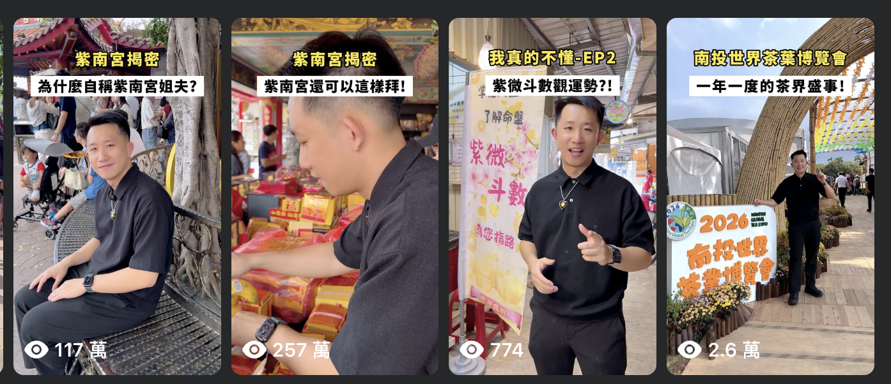
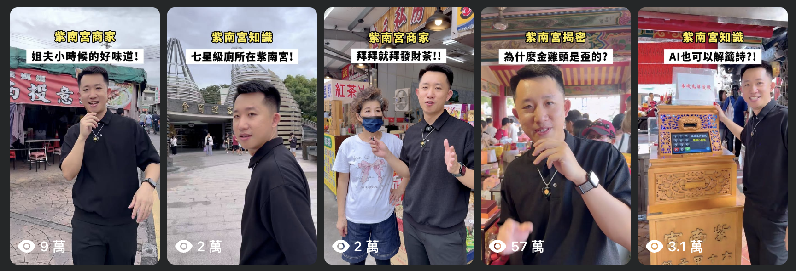
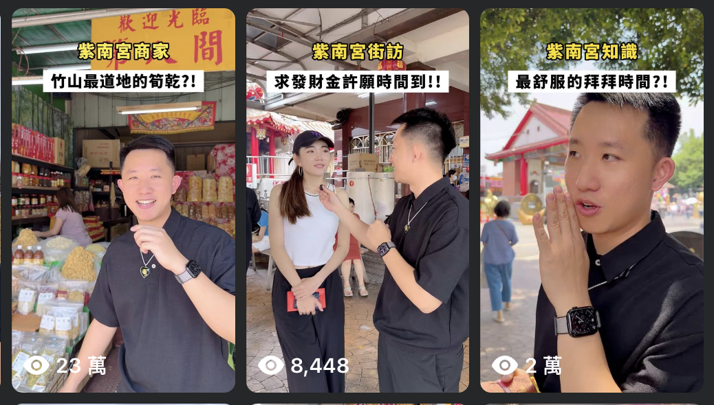
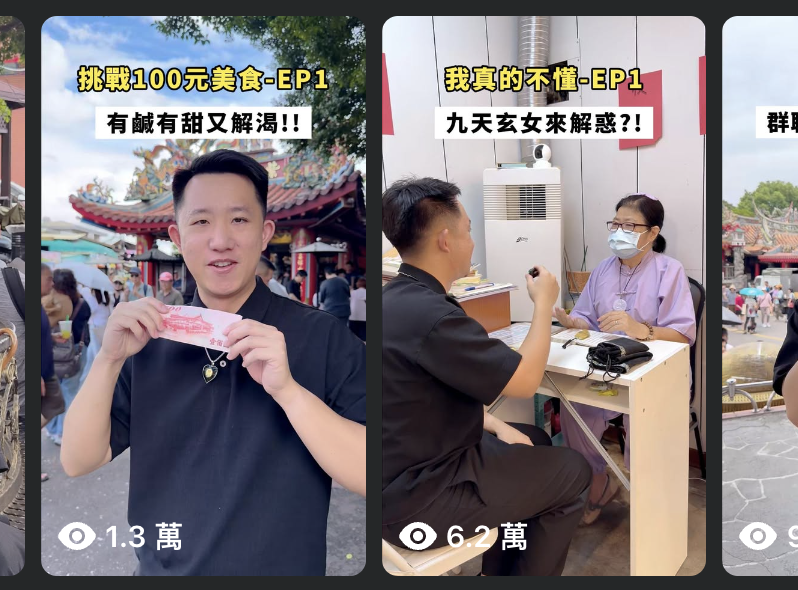
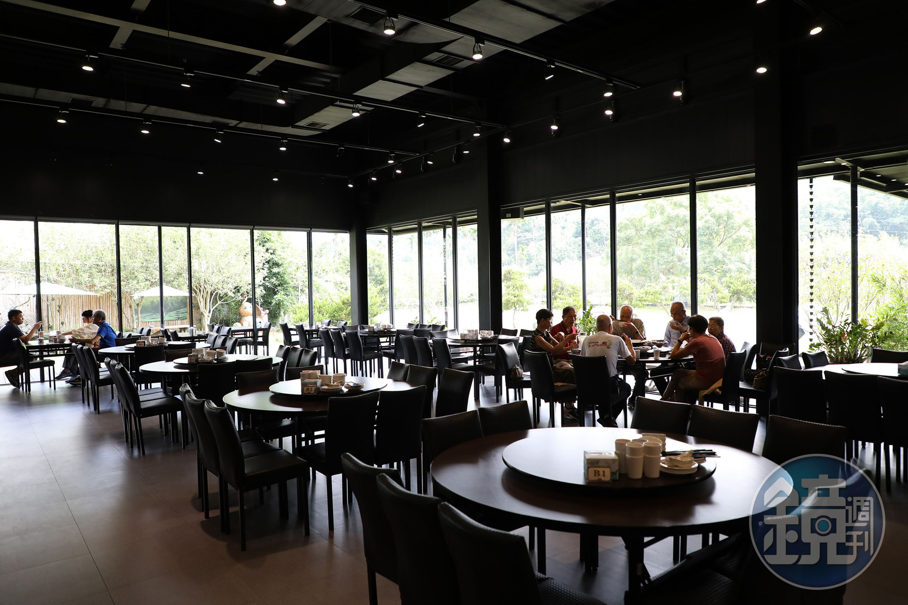
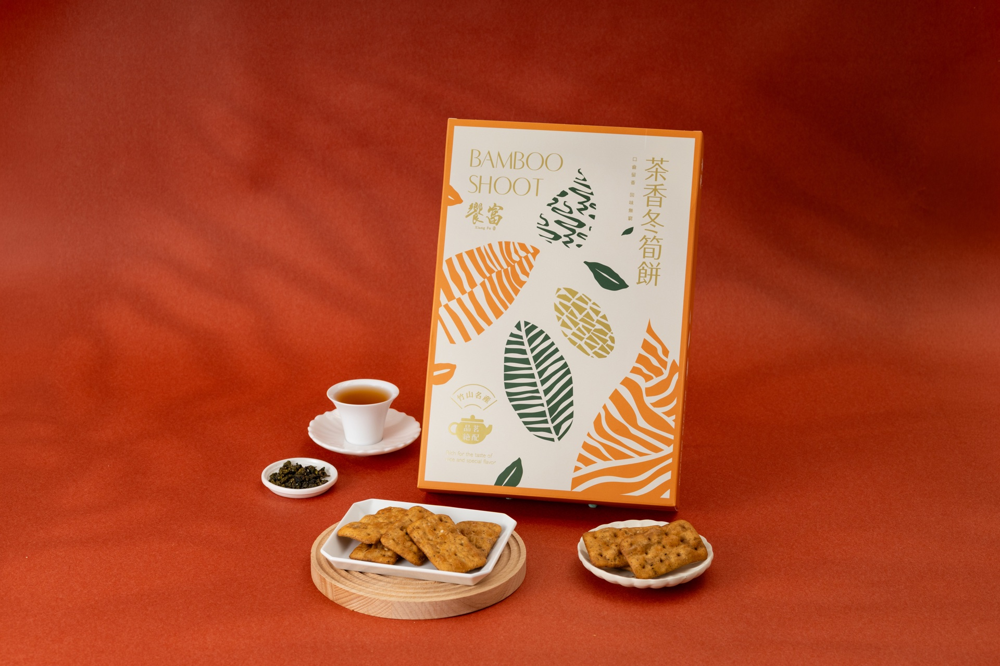

紫南宮姐夫.
短影音企劃 / 個人品牌營運
把在地故事，說給更多人聽。從廟宇知識、商家探訪到街頭訪談，用短影音連結地方與觀眾。
左右滑動，探索更多




我的路徑，從經濟學與消費者分析出發，走進企業資訊部門、實體創業，再延伸到 AI 產品與影音創作。
逢甲大學經濟學系、英國里茲大學消費者分析與行銷策略碩士，讓我建立分析問題的基礎。我喜歡資料科學，享受從資料中發現規律、釐清問題，再把分析轉化為實際應用的過程。在里茲大學期間，我參與資料科學社團，並代表社團參加 Hiscox 大學數據挑戰賽，獲得冠軍。
與家族共同創立並經營饗富餐廳，從品牌建立、行銷活動規劃，到日常營運、成本與現金流控管及團隊帶領，累積實體商業經營與解決問題的能力。
如今，我把技術理解、商業洞察與表達能力放在一起，持續探索從想法到落地的可能。
把台股籌碼，轉化為看得懂的資訊。
獨立打造台股籌碼分析平台，應用機器學習建立分析模型，完整走過資料收集、數據分析、模型建置到產品開發的流程。
彙整證交所、櫃買中心公開資料，部分經 FinMind，建立每日盤後更新流程。
整理三大法人、券商分點與產業資金流，設計淨流佔比、參與率、進出比等指標，並應用機器學習建立分析模型。
運用 AI 輔助開發，以 Next.js、TypeScript 與 PostgreSQL 完成總覽、產業、法人、分點及個股模組。
讓觀點有畫面，讓知識更好理解。
從 0 到 1，走進真實的商業現場。
與家族共同創立餐飲品牌並營運至今，參與品牌建立、行銷活動規劃，負責日常營運、成本與現金流控管及團隊管理，並在經營過程中累積解決問題的能力。
串聯現場營運與團隊分工，解決日常經營問題，建立可持續執行的流程。
分析淡旺季營收、客單價分布與食材庫存週轉率，調整菜單毛利結構。
在市場波動與實體經營的考驗中，累積抗壓決策與執行經驗。
在資訊科技部，連結數據與業務需求。
擔任資料分析專員，協助跨部門挖掘業務痛點，運用數據分析支援決策。累積資料收集、資料庫清洗與數據管線流程的實務經驗。
代表里茲大學數據科學社團參賽。
獲得 Hiscox 大學數據挑戰賽冠軍。履歷記錄的分析實作涵蓋鐵路事故風險預測，以及新創企業成功因素分析。
里茲大學官方報導 ↗每一次轉向，都是下一段旅程的養分。
台股籌碼分析平台 / 獨立開發
整合台股籌碼資料與分析指標，應用機器學習建立分析模型，將資料處理、模型建置與產品開發串成完整的實作流程。
履歷提供的實機操作錄影 · 畫面資料日期：2026-09-18
短影音企劃 / 個人品牌營運
把在地故事，說給更多人聽。從廟宇知識、商家探訪到街頭訪談，用短影音連結地方與觀眾。




共同創辦 / 實體商業經營
與家族共同創立並經營饗富餐廳，從品牌建立、行銷活動規劃，到日常營運、成本與現金流控管及團隊帶領，累積實體商業經營與解決問題的能力。

從接待到用餐，落實現場營運與團隊協作。
從食材供應到出餐流程，串起日常經營。
推出饗富發財糕限定禮盒，將祝福心意融入商品，延伸餐廳品牌的送禮體驗。

推出茶香冬筍餅限定商品，以在地風味延伸品牌特色，讓餐桌之外也能品味饗富。
消費者分析與行銷策略 碩士
MSc Consumer Analytics and Marketing Strategy
參與里茲大學資料科學社團（Leeds Data Science Society）
代表社團參賽，獲 Hiscox 大學數據挑戰賽冠軍
經濟學系 學士
交換經歷：上海同濟大學、德國紐倫堡科技大學，各一學期